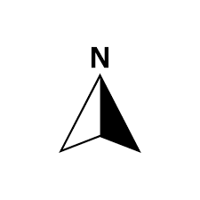

<!doctype html>
<html lang="ind">
    <head>
	<meta charset="utf-8" >
	<meta name="description" content="Websig UMS">
	<meta name="viewport" content="width=device-width, initial-scale=1.0">
	<meta name="author" content="Rahmadhana Guntur Gymnastiar Putra">
	<meta name="keyword" content="HTML,Map,Websig,GIS,SIG">

	<title>WEBSIG UMS</title>
<style>
	body {
		margin: 0;
	}
</style>
	<!-- Kode penghubung leaflet-->
	<link rel="stylesheet" href="leaflet/leaflet.css"/>
	<script src="leaflet/leaflet.js"></script>
	
	<!--sisipkan kode pemuatan untuk menghubungkan html dengan minimap-->
	<link rel="stylesheet" href="leaflet/Control.MiniMap.css"/>
	<script src="leaflet/Control.MiniMap.js"></script>
	
	<!--sisipkan kode pemuatan untuk menghubungkan html dengan leaflet mouse position -->
	<link rel="stylesheet" href="leaflet/L.Control.MousePosition.css"/>
	<script src="leaflet/L.Control.MousePosition.js"></script>
	
	
	<!--sisipkan kode pemuatan untuk menghubungkan leaflet dengan groupedlayercontrol -->
	<link rel="stylesheet" href="leaflet/leaflet.groupedlayercontrol.css"/> 
	<script src="leaflet/leaflet.groupedlayercontrol.js"></script>

	<!--sisipkan kode measurement-->
	<link rel="stylesheet" href="leaflet/Leaflet.LinearMeasurement.css"/>
	<script src="leaflet/Leaflet.LinearMeasurement.js"></script>
	
	
	<!--kode perpindahan marker ke lokasi lain-->
	<link rel="stylesheet" href="leaflet.marker.slideto.master.css" />
	<script src="Leaflet.Marker.SlideTo.js"></script>

    </head>
   <body>
<!-- peta akan ditampilkan disini -->
         <div style="height:100%; width:100%" id="mapid"></div>
    </body>

	<!--tombol untuk berpindah lokasi-->
		<button id="solo">solo</button>Solo
		<button id="pkl">pkl</button>Pekalongan
		<button id="jkt">jkt</button>Jakarta
		<button id="bdg">bdg</button>Bandung
		<button id="srb">srb</button>Surabaya
		<button id="diy">DIY</button>Yogyakarta
		
	
	
	<script src="pkl.js"></script>

	 
	<script>
	var mymap = L.map('mapid').setView([-7.02695, 109.58112], 13);
	
	var GoogleMaps = new L.TileLayer('https://mt1.google.com/vt/lyrs=m&x={x}&y={y}&z={z}', { 
     opacity: 1.0, attribution: 'Praktikum WEBSIG'
	}).addTo(mymap);
	var GoogleSatelliteHybrid = L.tileLayer('https://mt1.google.com/vt/lyrs=y&x={x}&y={y}&z={z}', { 
     maxZoom: 22, 
     attribution: 'Praktikum WEBSIG' 
	});

	var baseLayers = {
     'Google Satellite Hybrid': GoogleSatelliteHybrid,
     'Google Maps': GoogleMaps,
	}; 

	L.control.groupedLayers(baseLayers).addTo(mymap);
	var polyg2 = L.geoJson(polygons.features).addTo(mymap);
	
	var marker = L.marker([-7.02695, 109.58112]).addTo(mymap);
	
	marker.bindPopup("<b>Informasi</b><br><b><i>Km 0 Kabupaten Pekalongan</b></i>");
	
	L.control.scale( { 
		position:'topright', 
		maxWidth:300, 
		imperial:false, 
	}  ).addTo(mymap);
	
	L.control.mousePosition().addTo(mymap);
	
	var north = L.control({position: "bottomleft"});
	north.onAdd = function(mymap) {
    var div = L.DomUtil.create("div", "info legend");
    div.innerHTML = '';
    return div;
	}
	north.addTo(mymap);

	var north = L.control({position: "topleft"});
	north.onAdd = function(mymap) {
    var div = L.DomUtil.create("div", "info legend");
    div.innerHTML = '';
    return div;
	}
	north.addTo(mymap);
	
	var osmUrl='http://{s}.tile.openstreetmap.org/{z}/{x}/{y}.png';
	var osmAttrib='Map data &copy; OpenStreetMap contributors';
	var osm = new L.TileLayer(osmUrl, {minZoom: 5, maxZoom: 18, attribution: osmAttrib});

	mymap.addLayer(osm);
	mymap.setView(new L.LatLng(-7.02695, 109.58112),13);
		
	//Plugin magic goes here! Note that you cannot use the same layer object again, as that will confuse the two map controls
	var osm2 = new L.TileLayer(osmUrl, {minZoom: 0, maxZoom: 13, attribution: osmAttrib });
	var miniMap = new L.Control.MiniMap(osm2, { toggleDisplay: true }).addTo(mymap);

	//Plugin magic goes here! Note that you cannot use the same layer object again, as that
	mymap.addControl(new L.Control.LinearMeasurement({
        unitSystem: 'imperial:false',
		position:'topright',
        color: '#5a32a8',
        type: 'line'
    }));

	var jkt = [-6.17545, 106.82715],
			lnd = [51.51, -0.12],
			pkl = [-7.02695, 109.58112],
			solo = [-7.57196, 110.83122],
			trd = [63.41, 10.41],
			mad = [40.40, -3.7];

			

	document.getElementById('solo').onclick   = function () { marker.slideTo(solo,    {duration:500, keepAtCenter: true}); };
	document.getElementById('pkl').onclick   = function () { marker.slideTo(pkl,    {duration:1000, keepAtCenter:true}); };
	document.getElementById('bdg').onclick  = function () { marker.slideTo(bdg,   {duration:2000, keepAtCenter:true}); };
	document.getElementById('jkt').onclick  = function () { marker.slideTo(jkt,   {duration:5000, keepAtCenter:true}); };
	document.getElementById('srb').onclick = function () { marker.slideTo(srb,  {duration:1000, keepAtCenter: true}); };
	document.getElementById('diy').onclick  = function () { marker.slideTo(diy,   {duration:2000, keepAtCenter: true}); };

	</script>

</html>

